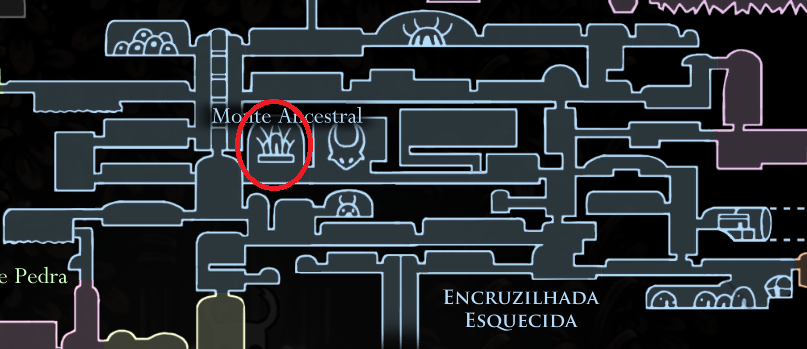

Aumenta o ganho de alma ao bater em inimigos. Muito util contra bosses ou em situações que você precisa de alma o mais rápido possivel. Usado pelos xamãs

Apanhador de Almas
É um amuleto que pode ser recebido após derrotar o Falso Cavaleiro,
em Encruzilhadas Esquecidas. Após te-lo derrotado, irá se abrir uma
porta para um local pequeno chamado Monte Ancestral, irá aparecer um
baú com o amuleto.
